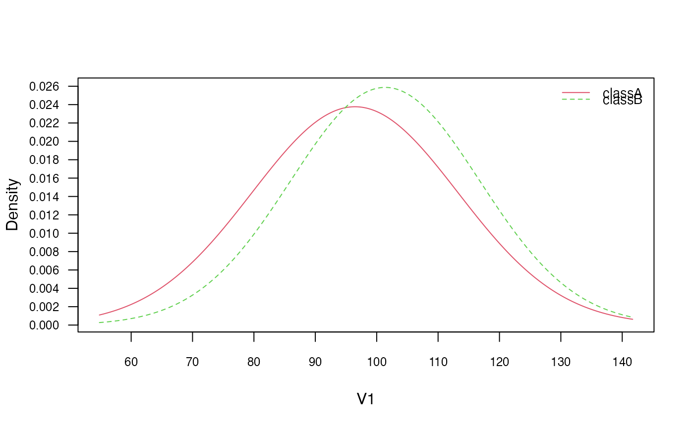
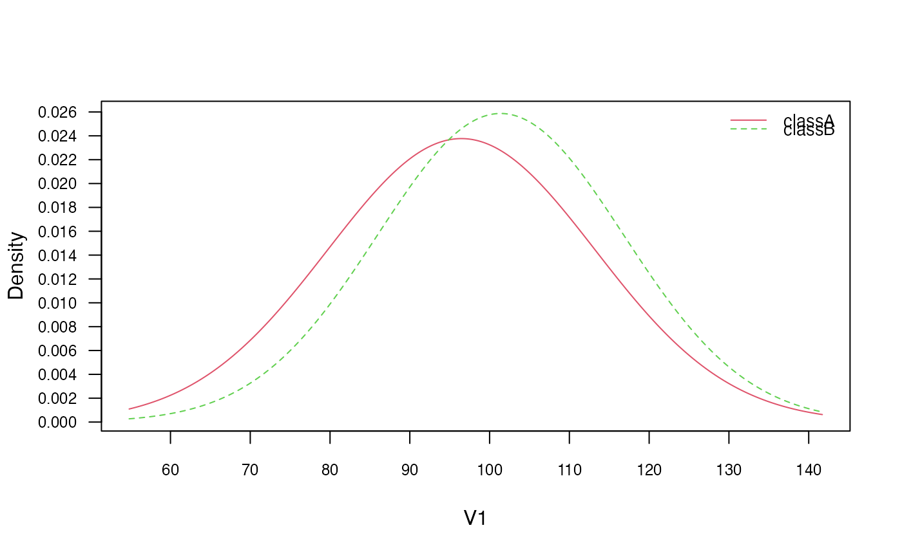

Gaussian Naive Bayes Classifier
gaussian_naive_bayes.Rdgaussian_naive_bayes is used to fit the Gaussian Naive Bayes model in which all class conditional distributions are assumed to be Gaussian and be independent.
Arguments
- x
numeric matrix with metric predictors (matrix or dgCMatrix from Matrix package).
- y
class vector (character/factor/logical).
- prior
vector with prior probabilities of the classes. If unspecified, the class proportions for the training set are used. If present, the probabilities should be specified in the order of the factor levels.
- ...
not used.
Value
gaussian_naive_bayes returns an object of class "gaussian_naive_bayes" which is a list with following components:
- data
list with two components:
x(matrix with predictors) andy(class variable).- levels
character vector with values of the class variable.
- params
list with two matrices, first containing the class conditional means and the second containing the class conditional standard deviations.
- prior
numeric vector with prior probabilities.
- call
the call that produced this object.
Details
This is a specialized version of the Naive Bayes classifier, in which all features take on real values (numeric/integer) and class conditional probabilities are modelled with the Gaussian distribution.
The Gaussian Naive Bayes is available in both, naive_bayes and gaussian_naive_bayes.The latter provides more efficient performance though. Faster calculation times come from restricting the data to a matrix with numeric columns and taking advantage of linear algebra operations. Sparse matrices of class "dgCMatrix" (Matrix package) are supported in order to furthermore speed up calculation times.
The gaussian_naive_bayes and naive_bayes() are equivalent when the latter is used with usepoisson = FALSE and usekernel = FALSE; and a matrix/data.frame contains numeric columns.
The missing values (NAs) are omited during the estimation process. Also, the corresponding predict function excludes all NAs from the calculation of posterior probabilities (an informative warning is always given).
Author
Michal Majka, michalmajka@hotmail.com
Examples
# library(naivebayes)
set.seed(1)
cols <- 10 ; rows <- 100
M <- matrix(rnorm(rows * cols, 100, 15), nrow = rows, ncol = cols)
y <- factor(sample(paste0("class", LETTERS[1:2]), rows, TRUE, prob = c(0.3,0.7)))
colnames(M) <- paste0("V", seq_len(ncol(M)))
### Train the Gaussian Naive Bayes
gnb <- gaussian_naive_bayes(x = M, y = y)
summary(gnb)
#>
#> ============================= Gaussian Naive Bayes =============================
#>
#> - Call: gaussian_naive_bayes(x = M, y = y)
#> - Samples: 100
#> - Features: 10
#> - Prior probabilities:
#> - classA: 0.27
#> - classB: 0.73
#>
#> --------------------------------------------------------------------------------
# Classification
head(predict(gnb, newdata = M, type = "class")) # head(gnb %class% M)
#> [1] classB classB classA classB classB classB
#> Levels: classA classB
# Posterior probabilities
head(predict(gnb, newdata = M, type = "prob")) # head(gnb %prob% M)
#> classA classB
#> [1,] 0.4553595 0.5446405
#> [2,] 0.3364966 0.6635034
#> [3,] 0.6584491 0.3415509
#> [4,] 0.1223808 0.8776192
#> [5,] 0.1058829 0.8941171
#> [6,] 0.4324113 0.5675887
# Parameter estimates
coef(gnb)
#> classA:mu classA:sd classB:mu classB:sd
#> V1 100.51459 11.00274 102.04709 14.32595
#> V2 96.56021 14.91150 100.49537 14.11837
#> V3 106.89867 14.50319 98.05817 15.28359
#> V4 101.56819 17.79176 100.48030 13.77000
#> V5 97.61678 19.18794 100.07734 16.98860
#> V6 100.48865 12.21237 98.90448 15.30553
#> V7 97.69133 14.52346 96.75294 16.88204
#> V8 100.75641 15.29154 99.72547 16.96406
#> V9 102.02673 16.07487 99.45745 16.47256
#> V10 98.98690 18.06542 100.45824 15.02574
### Sparse data: train the Gaussian Naive Bayes
library(Matrix)
M_sparse <- Matrix(M, sparse = TRUE)
class(M_sparse) # dgCMatrix
#> [1] "dgCMatrix"
#> attr(,"package")
#> [1] "Matrix"
# Fit the model with sparse data
gnb_sparse <- gaussian_naive_bayes(M_sparse, y)
# Classification
head(predict(gnb_sparse, newdata = M_sparse, type = "class"))
#> [1] classB classB classA classB classB classB
#> Levels: classA classB
# Posterior probabilities
head(predict(gnb_sparse, newdata = M_sparse, type = "prob"))
#> classA classB
#> [1,] 0.4553595 0.5446405
#> [2,] 0.3364966 0.6635034
#> [3,] 0.6584491 0.3415509
#> [4,] 0.1223808 0.8776192
#> [5,] 0.1058829 0.8941171
#> [6,] 0.4324113 0.5675887
# Parameter estimates
coef(gnb_sparse)
#> classA:mu classA:sd classB:mu classB:sd
#> V1 100.51459 11.00274 102.04709 14.32595
#> V2 96.56021 14.91150 100.49537 14.11837
#> V3 106.89867 14.50319 98.05817 15.28359
#> V4 101.56819 17.79176 100.48030 13.77000
#> V5 97.61678 19.18794 100.07734 16.98860
#> V6 100.48865 12.21237 98.90448 15.30553
#> V7 97.69133 14.52346 96.75294 16.88204
#> V8 100.75641 15.29154 99.72547 16.96406
#> V9 102.02673 16.07487 99.45745 16.47256
#> V10 98.98690 18.06542 100.45824 15.02574
### Equivalent calculation with general naive_bayes function.
### (no sparse data support by naive_bayes)
nb <- naive_bayes(M, y)
summary(nb)
#>
#> ================================= Naive Bayes ==================================
#>
#> - Call: naive_bayes.default(x = M, y = y)
#> - Laplace: 0
#> - Classes: 2
#> - Samples: 100
#> - Features: 10
#> - Conditional distributions:
#> - Gaussian: 10
#> - Prior probabilities:
#> - classA: 0.27
#> - classB: 0.73
#>
#> --------------------------------------------------------------------------------
head(predict(nb, type = "prob"))
#> classA classB
#> [1,] 0.4553595 0.5446405
#> [2,] 0.3364966 0.6635034
#> [3,] 0.6584491 0.3415509
#> [4,] 0.1223808 0.8776192
#> [5,] 0.1058829 0.8941171
#> [6,] 0.4324113 0.5675887
# Obtain probability tables
tables(nb, which = "V1")
#> --------------------------------------------------------------------------------
#> :: V1 (Gaussian)
#> --------------------------------------------------------------------------------
#>
#> V1 classA classB
#> mean 100.51459 102.04709
#> sd 11.00274 14.32595
#>
#> --------------------------------------------------------------------------------
tables(gnb, which = "V1")
#> --------------------------------------------------------------------------------
#> :: V1 (Gaussian)
#> --------------------------------------------------------------------------------
#> classA classB
#> mu 100.51459 102.04709
#> sd 11.00274 14.32595
#>
#> --------------------------------------------------------------------------------
# Visualise class conditional Gaussian distributions
plot(nb, "V1", prob = "conditional")
 plot(gnb, which = "V1", prob = "conditional")

# Check the equivalence of the class conditional distributions
all(get_cond_dist(nb) == get_cond_dist(gnb))
#> [1] TRUE
plot(gnb, which = "V1", prob = "conditional")

# Check the equivalence of the class conditional distributions
all(get_cond_dist(nb) == get_cond_dist(gnb))
#> [1] TRUE